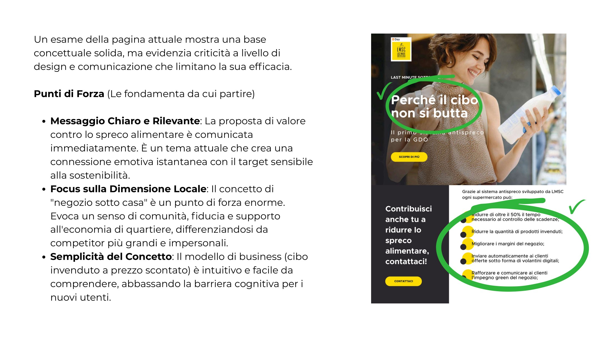
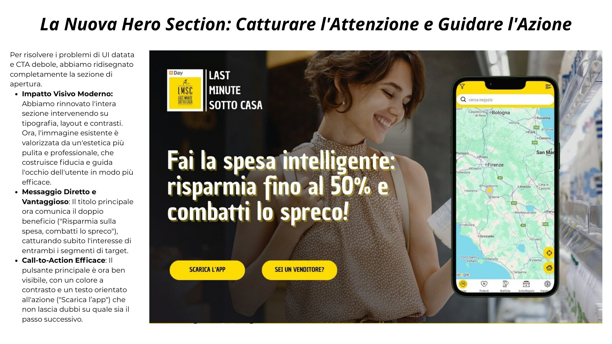
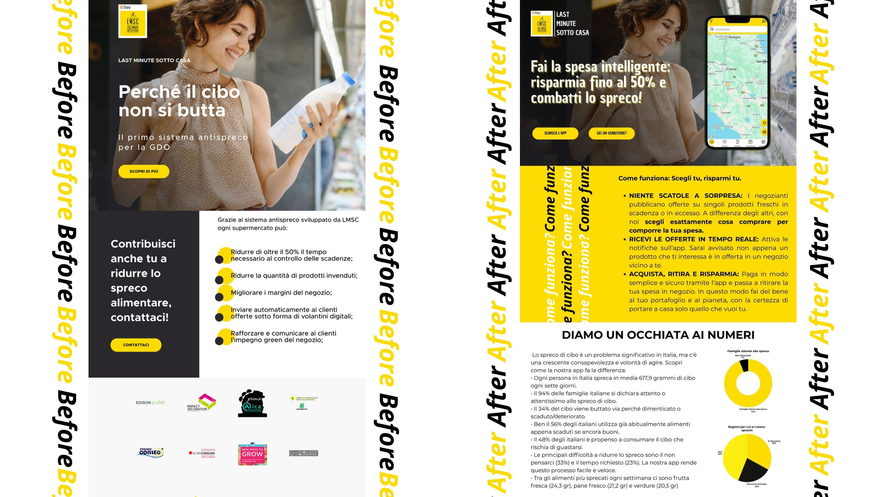

Una buona idea che meritava un'interfaccia migliore
LastMinuteSottoCasa è una piattaforma italiana che combatte lo spreco alimentare connettendo negozi locali con i cittadini: i commercianti vendono a prezzo scontato prodotti freschi invenduti, i consumatori risparmiano sulla spesa riducendo gli sprechi.
Il modello funzionava. L'interfaccia no. L'obiettivo del progetto era condurre un'analisi critica dell'esperienza utente esistente e proporre un redesign completo, con focus sulla chiarezza della proposta di valore e sull'efficacia delle call to action.
Cosa non funzionava nell'interfaccia esistente
Estetica datata
Tipografia, colori e layout non comunicavano fiducia né modernità. Il design non era all'altezza della proposta valoriale del servizio.
Gerarchia visiva debole
Gli elementi importanti non emergevano. L'utente non capiva immediatamente cosa faceva la piattaforma e perché avrebbe dovuto usarla.
CTA inefficaci
Le call to action erano poco visibili, mal posizionate e con testi generici. Non guidavano l'utente verso la conversione.
Nessuna social proof
Nessun numero, nessuna testimonianza, nessun elemento che costruisse fiducia e credibilità verso i nuovi utenti.

Un'esperienza più chiara, più moderna, più convincente
Il redesign si articola in quattro sezioni, ognuna pensata per rispondere a un bisogno specifico dell'utente nel percorso di onboarding:
Hero section
Nuovo visual di impatto con headline chiara: "Risparmia sulla spesa, combatti lo spreco." CTA primaria ben visibile. Valore comunicato al primo colpo d'occhio.
Come funziona — 3 step
Trova i negozi vicino a te → Scegli i prodotti in sconto → Ritira in negozio. Processo immediato e rassicurante, con icone dedicate.
Statistiche d'impatto
Barra con numeri reali: pasti salvati, negozi attivi, kg di cibo recuperato. Costruisce credibilità e rafforza la proposta valoriale.
Testimonial
Voci di commercianti e cittadini che già usano la piattaforma. Social proof autentica per abbattere le barriere di fiducia.

Prima e dopo
Il redesign trasforma l'interfaccia da una pagina generica a un prodotto digitale con identità chiara, proposta di valore leggibile al primo colpo d'occhio e un percorso utente che guida verso l'azione.
